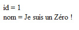

Je vais dans ce tutoriel vous apprendre comment installer sa base de données MySQL, sans forcément passer par PhpMyAdmin, à l'image des CMS.
Avant d'aller plus loin, je vais partir du principe que vous avez lu et compris le tutoriel de M@teo21 au moins jusqu'à la PARTIE 3.
Organisation du script :
install/ : - base.sql : requêtes SQL ; - index.php : formulaire pour établir la connexion avec la base de données (pas de PHP) ; - traitement.php : la partie la plus grosse la plus intéressante du tutoriel, nous établirons la connexion avec la base de données, créerons un fichier de configuration et exécuterons le fichier contenant les requêtes à envoyer au serveur ; - test.php : ce fichier nous permettra d'établir en une seule ligne la connexion avec la base de données et par un petit code, de récupérer les informations de la table "tuto".
sql/ : - ici sera placé notre fichier de configuration (config.php) pour pouvoir se connecter à la base de données grâce à ce seul fichier qui devra être inclus à chaque fois qu'il sera nécessaire.
Un exemple rien que pour le tutoriel, vous êtes censés comprendre ces lignes :-° :
--
-- Structure de la table `tuto`
--
CREATE TABLE IF NOT EXISTS `tuto` (
`id` tinyint(4) NOT NULL auto_increment,
`nom` varchar(255) NOT NULL default '',
PRIMARY KEY (`id`)
) ENGINE=MyISAM DEFAULT CHARSET=latin1 AUTO_INCREMENT=2 ;
--
-- Contenu de la table `tuto`
--
INSERT INTO `tuto` VALUES (1, 'Je suis un Zéro !');
Maintenant que nous avons notre fichier base.sql, nous pouvons réaliser notre simplissime formulaire. Voici pour l'occasion une page xHTML :
<!DOCTYPE html PUBLIC "-//W3C//DTD XHTML 1.0 Transitional//EN" "http://www.w3.org/TR/xhtml1/DTD/xhtml1-transitional.dtd">
<html xmlns="http://www.w3.org/1999/xhtml">
<head>
<meta http-equiv="Content-Type" content="text/html; charset=iso-8859-1" />
<title>Installation automatisée : 1ère étape</title>
<style type="text/css">
body {
font-family:Tahoma, Arial, Serif; /* polices du texte */
font-size:14px; /* taille du texte */
}
h1 {
font-size:1.4em; /* taille du titre */
}
label
{
font-size:1.2em; /* taille du texte pour les "label" */
display:block; /* on affiche les "label" en tant que block et non pas inline */
width:150px; /* on leur met une taille pour aligner nos zones de texte */
float:left; /* flottant à gauche */
}
</style>
</head>
<body>
<h1>Informations sur la base de données MySQL :</h1>
<p>
<form action="traitement.php" method="post">
<p>
<input type="hidden" name="etape" value="1" />
<label for="hote">Hôte :</label>
<input type="text" name="hote" maxlength="40" /><br />
<label for="login">Utilisateur :</label>
<input type="text" name="login" maxlength="40" /><br />
<label for="mdp">Mot de passe :</label>
<input type="password" name="mdp" maxlength="40" /><br />
<label for="base">Nom de la base :</label>
<input type="text" name="base" maxlength="40" /><br /><br />
<label for="submit"> </label>
<input type="submit" name="submit" value="Envoyer" />
</p>
</form>
</p>
</body>
</html>
Ce qu'il vous faudra remplir (pour du local) :
Hôte : localhost ;
Utilisateur : root ;
Mot de passe : le mot de passe pour l'utilisateur root ;
Vous constatez que j'ai encore mis un peu de CSS : il nous servira plus tard afin de mettre en valeur certaines choses. Venons-en à notre cher PHP, vous êtes là pour ça, non ? Ça tombe bien, j'en ai à vous faire croquer ! :-°
<?php
if(isset($_POST['etape']) AND $_POST['etape'] == 1) { // si nous venons du formulaire alors
// on crée des constantes dont on se servira plus tard
define('RETOUR', '<br /><br /><input type="button" value="Retour" onclick="history.back()">');
define('OK', '<span class="ok">OK</span><br />');
define('ECHEC', '<span class="echec">ECHEC</span>');
?>
Comme promis, nous vérifions ici si la superglobale $_POST['etape'] existe et si elle vaut 1. Nous en profitons pour créer des constantes qui auront leur utilité par la suite. Comme tout est bon, il ne reste plus qu'à coder le reste dans ce if . :)
D'ailleurs, nous allons commencer à utiliser les fonctions qui aident à la manipulation de fichiers.
Fichier de configuration
<?php
$fichier = '../sql/config.php';
if(file_exists($fichier) AND filesize($fichier ) > 0) { // si le fichier existe et qu'il n'est pas vide alors
exit('Fichier de configuration déjà existant. Installation interrompue.'. RETOUR);
}
?>
Nous créons une variable $fichier qui contient le chemin relatif du fichier à créer. Si vous ne vous souvenez plus du concept de chemin relatif et absolu, je vous invite à aller (re)lire ceci. Dans ce fragment de code, nous testons l'existence du fichier grâce à la fonction file_exists() qui prend donc en argument le chemin du fichier. De plus, s'il existe, nous souhaitons savoir s'il est vide ou non ; autrement dit, si sa taille est supérieure ou non à 0 octet. Une fonction bien pratique nommée filesize() nous permet donc de faire cela.
Si notre condition est remplie, à savoir : si le fichier sql/config.php existe et qu'il n'est pas vide, alors on s'arrête là en utilisant la fonction exit() qui prend en paramètre une chaîne de caractères ou un entier (voir la documentation car il y a des exceptions liées aux versions de PHP).
Pourquoi on s'arrête ?
Si cette condition est remplie, c'est que le script a déjà été exécuté, et donc, pour des raisons de sécurité, nous ne changeons pas les valeurs de connexion à la base sans avoir préalablement supprimé le fichier de configuration.
<?php
// on crée nos variables, et au passage on retire les éventuels espaces
$hote = trim($_POST['hote']);
$login = trim($_POST['login']);
$mdp = trim($_POST['mdp']);
$base = trim($_POST['base']);
?>
Ici, nous traitons nos superglobales $_POST['...'] en leur passant la fonction trim() qui prend en paramètre la chaîne de caractères : elle sert à retirer les espaces insérés (accidentellement ? :p ) en début et en fin de chaine.
<?php
// on vérifie la connectivité avec le serveur avant d'aller plus loin
if(!mysql_connect($hote, $login, $mdp)) {
exit('Mauvais paramètres de connexion.'. RETOUR);
}
// on vérifie la connectivité avec la base avant d'aller plus loin
if(!mysql_select_db($base)) {
exit('Mauvais nom de base.'. RETOUR);
}
?>
Pas grand-chose à expliquer ici, les commentaires sont clairs. Peut-être que le ! peut gêner certain(e)s. Succinctement, le point d'exclamation devant une fonction ou une variable vérifie "le contraire" de la fonction. Dans notre exemple : mysql_connect() sert à se connecter au serveur ; en y plaçant le ! devant, cela se transforme en "si on ne peut pas se connecter au serveur...". Le RETOUR est une des constantes définies au début du fichier.
<?php
// le texte que l'on va mettre dans le config.php
$texte = '<?php
$hote = "'. $hote .'";
$login = "'. $login .'";
$mdp = "'. $mdp .'";
$base = "'. $base .'";
mysql_connect($hote,$login,$mdp);
mysql_select_db($base);
?>';
?>
Nous compliquons la chose, nous créons une variable $texte dans laquelle nous y écrivons le code PHP à insérer dans notre fichier config.php. En fait, comme vous pouvez le remarquer ici, nous écrivons du PHP dans du PHP. Regardez bien le code après les apostrophes ' , le code n'est pas "pris en compte" ni exécuté. Il nous suffit alors de concaténer nos variables fraîchement attribuées. Pour ceux qui ont oublié un trou de mémoire, vous êtes vivement invités à consulter la partie du tuto de M@teo21 concernant la concaténation.
<?php
// on vérifie s'il est possible d'ouvrir le fichier
if(!$ouvrir = fopen($fichier, 'w')) {
exit('Impossible d\'ouvrir le fichier : <strong>'. $fichier .'</strong>.'. RETOUR);
}
// s'il est possible d'écrire dans le fichier alors on ne se gêne pas
if(fwrite($ouvrir, $texte) == FALSE) {
exit('Impossible d\'écrire dans le fichier : <strong>'. $fichier .'</strong>.'. RETOUR);
}
// tout s'est bien passé
echo 'Fichier de configuration : '. OK;
fclose($ouvrir); // on ferme le fichier
?>
La fonction fopen() (pour file open ) nous permet d'ouvrir un fichier, elle prend en paramètre le chemin du fichier (ou une URL) ainsi que le mode d'ouverture ; ici, nous avons seulement besoin d'ouvrir notre fichier config.php en écriture, soit le mode w (pour write ). Extrait de la documentation officielle pour le mode w :
Citation
Ouvre en écriture seule ; place le pointeur de fichier au début du fichier et réduit la taille du fichier à 0. Si le fichier n'existe pas, on tente de le créer.
Notre pointeur de fichier (le pointeur est en quelque sorte votre focus de souris positionné au début) est créé et placé au début grâce à fopen(), nous pouvons donc user de la fonction fwrite() qui prend en paramètres le pointeur et la chaîne de caractères à écrire dans le fichier concerné.
Notre fichier a été correctement écrit, nous pouvons le fermer à l'aide de la fonction fclose() qui prend en paramètre le pointeur.
Nous en avons terminé avec le fichier de configuration. :o
Fichier de requêtes
Il ne nous reste plus qu'à exécuter nos requêtes SQL sur notre base.
<?php
$requetes = ''; // on crée une variable vide car on va s'en servir après
$sql = file('./base.sql'); // on charge le fichier SQL qui contient des requêtes
foreach($sql as $lecture) { // on le lit
if(substr(trim($lecture), 0, 2) != '--') { // suppression des commentaires et des espaces
$requetes .= $lecture; // nous avons nos requêtes dans la variable
}
}
?>
Une autre manière de gérer les fichiers en PHP. Nous pouvons utiliser la fonction file() qui elle, nous renvoie le résultat dans un tableau, contrairement à fopen() qui renvoie dans une chaîne de caractères. Nous utilisons un foreach() pour lire notre fichier. Ensuite nous retirons les éventuels commentaires inclus dans notre fichier car ils sont inutiles pour son exécution. Vous connaissez trim(), mais peut-être pas encore substr() qui renvoie une partie voulue d'une chaîne de caractères en fonction des paramètres que vous lui passez, la position de début ou de fin ainsi que la taille souhaitée (voir la documentation). Nous concaténons ensuite la variable $requetes avec $lecture .
<?php
$reqs = split(';', $requetes); // on sépare les requêtes
foreach($reqs as $req){ // et on les exécute
if(!mysql_query($req) AND trim($req) != '') { // si la requête fonctionne bien et qu'elle n'est pas vide
exit('ERREUR : '. $req); // message d'erreur
}
}
echo 'Installation : '. OK;
echo '<br /><span class="note">Note : si le site est en ligne, veuillez supprimer le répertoire <strong>/install</strong> du ftp.</span>';
} // si on passe sur ce fichier sans être passé par la première étape alors on redirige
else
exit('Vous devez d\'abord être passé par <a href="./index.php">le formulaire</a>.');
?>
</p>
</body>
</html>
Enfin, la fonction split() nous permet de couper une chaîne en tableau. Nous traiterons alors nos requêtes une par une. Encore un petit foreach() pour la route qui passe en revue notre tableau. Ensuite, nous vérifions si nos requêtes peuvent être exécutées et si elles sont "différentes de vide" (dans le cas où nous aurions un fichier base.sql vide). Tout est bon, message de confirmation. Sinon, (rappelez-vous) on ne vient pas du formulaire (la première condition du fichier n'est pas remplie), alors on retourne un message d'erreur. On peut terminer notre page xHTML, le travail est terminé.
Code final
<!DOCTYPE html PUBLIC "-//W3C//DTD XHTML 1.0 Transitional//EN" "http://www.w3.org/TR/xhtml1/DTD/xhtml1-transitional.dtd">
<html xmlns="http://www.w3.org/1999/xhtml">
<head>
<meta http-equiv="Content-Type" content="text/html; charset=iso-8859-1" />
<title>Installation automatisée : 2nde étape</title>
<style type="text/css">
body {
font-family:Tahoma, Arial, Serif;
font-size:14px;
}
.note {
font-size:1.1em;
font-style:italic;
}
.ok {
color:green;
font-weight:bold;
}
.echec {
color:red;
font-weight:bold;
}
</style>
</head>
<body>
<p>
<?php
if(isset($_POST['etape']) AND $_POST['etape'] == 1) { // si nous venons du formulaire alors
// on crée des constantes dont on se servira plus tard
define('RETOUR', '<br /><br /><input type="button" value="Retour" onclick="history.back()">');
define('OK', '<span class="ok">OK</span><br />');
define('ECHEC', '<span class="echec">ECHEC</span>');
$fichier = '../sql/config.php';
if(file_exists($fichier) AND filesize($fichier ) > 0) { // si le fichier existe et qu'il n'est pas vide alors
exit('Fichier de configuration déjà existant. Installation interrompue.'. RETOUR);
}
// on crée nos variables, et au passage on retire les éventuels espaces
$hote = trim($_POST['hote']);
$login = trim($_POST['login']);
$mdp = trim($_POST['mdp']);
$base = trim($_POST['base']);
// on vérifie la connectivité avec le serveur avant d'aller plus loin
if(!mysql_connect($hote, $login, $mdp)) {
exit('Mauvais paramètres de connexion.'. RETOUR);
}
// on vérifie la connectivité avec la base avant d'aller plus loin
if(!mysql_select_db($base)) {
exit('Mauvais nom de base.'. RETOUR);
}
// le texte que l'on va mettre dans le config.php
$texte = '<?php
$hote = "'. $hote .'";
$login = "'. $login .'";
$mdp = "'. $mdp .'";
$base = "'. $base .'";
mysql_connect($hote,$login,$mdp);
mysql_select_db($base);
?>';
// on vérifie s'il est possible d'ouvrir le fichier
if(!$ouvrir = fopen($fichier, 'w')) {
exit('Impossible d\'ouvrir le fichier : <strong>'. $fichier .'</strong>.'. RETOUR);
}
// s'il est possible d'écrire dans le fichier alors on ne se gêne pas
if(fwrite($ouvrir, $texte) == FALSE) {
exit('Impossible d\'écrire dans le fichier : <strong>'. $fichier .'</strong>.'. RETOUR);
}
// tout s'est bien passé
echo 'Fichier de configuration : '. OK;
fclose($ouvrir); // on ferme le fichier
$requetes = ''; // on crée une variable vide car on va s'en servir après
$sql = file('./base.sql'); // on charge le fichier SQL qui contient des requêtes
foreach($sql as $lecture) { // on le lit
if(substr(trim($lecture), 0, 2) != '--') { // suppression des commentaires et des espaces
$requetes .= $lecture; // nous avons nos requêtes dans la variable
}
}
$reqs = split(';', $requetes); // on sépare les requêtes
foreach($reqs as $req){ // et on les exécute
if(!mysql_query($req) AND trim($req) != '') { // si la requête fonctionne bien et qu'elle n'est pas vide
exit('ERREUR : '. $req); // message d'erreur
}
}
echo 'Installation : '. OK;
echo '<br /><span class="note">Note : si le site est en ligne, veuillez supprimer le répertoire <strong>/install</strong> du ftp.</span>';
} // si on passe sur ce fichier sans être passé par la première étape alors on redirige
else
exit('Vous devez d\'abord être passé par <a href="./index.php">le formulaire</a>.');
?>
</p>
</body>
</html>
Allez, testons notre connexion à la base, ressortons ce qu'il y a dedans (oui, oui, j'ai enregistré des choses ! :p ) :
<?php
include('../sql/config.php'); // connexion à la base de données
$requete = "SELECT * FROM tuto"; // création de la requête
$resultat = mysql_query($requete) or die(mysql_error('ERREUR SQL '. $requete)); // exécution de la requête
while($donnees = mysql_fetch_array($resultat)) { // boucle et tableau pour récupérer les données
echo 'id = '. $donnees['id'] .'<br />';
echo 'nom = '. $donnees['nom'] .'<br />';
}
?>
Vous devriez obtenir ceci :

Des idées d'améliorations
Forcément, on ne passe pas à côté de l'amélioration "design", je n'ai pas fait le strict minimum, mais quelque chose de présentable.
Peut-être ne pas vérifier l'existence du fichier de configuration et simplement l'écraser s'il existe déjà, mais côté sécurité, je suis assez réticent.
Créer sa base grâce à un CREATE DATABASE dans le fichier base.sql et ainsi retirer le champ base du formulaire, mais aussi faire les modifications nécessaires dans traitement.php.
Je n'ai pas d'autres idées, mais je suis sûr que vous en avez, vous. ;)
Le tutoriel est maintenant terminé, j'espère que vous avez appris au moins quelque chose, comme manier (un peu) les fichiers avec PHP par exemple... :euh:
Je vous remercie de votre lecture, et bonne journée. :)